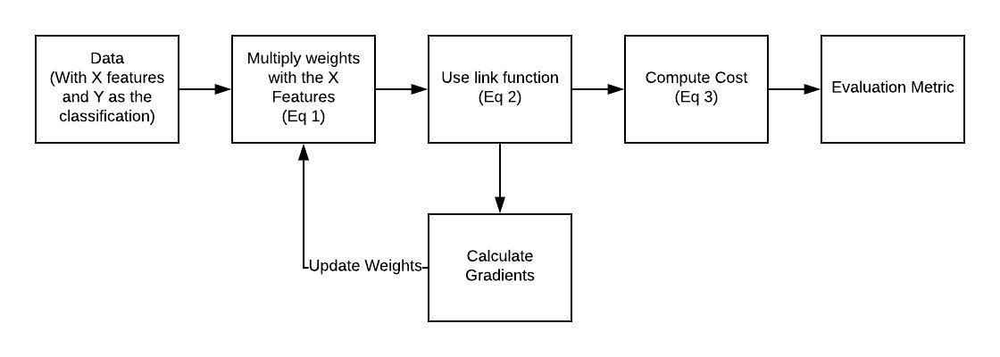

“Show me who your friends are and I’ll tell you who you are ?”
The concept of the k-nearest neighbor classifier can hardly be simpler described. This is an old saying, which can be found in many languages and many cultures. It’s also mentioned in other words in the Bible: “He who walks with wise men will be wise, but the companion of fools will suffer harm” (Proverbs 13:20 )
This means that the concept of the k-nearest neighbor classifier is part of our everyday life and judging: Imagine you meet a group of people, they are all very young, stylish and sportive. They talk about their friend Ben, who isn’t with them. So, what is your imagination of Ben? Right, you imagine him as being young, stylish and sportive as well.
If you learn that Ben lives in a neighborhood where people vote conservative and that the average income is above 200000 dollars a year? Both his neighbors make even more than 300,000 dollars per year? What do you think of Ben? Most probably, you do not consider him to be an underdog and you may suspect him to be a conservative as well?
The principle behind nearest neighbor classification consists in finding a predefined number, i.e. the ‘k’ — of training samples closest in distance to a new sample, which has to be classified. The label of the new sample will be defined from these neighbors. k-nearest neighbor classifiers have a fixed user defined constant for the number of neighbors which have to be determined. There are also radius-based neighbor learning algorithms, which have a varying number of neighbors based on the local density of points, all the samples inside of a fixed radius. The distance can, in general, be any metric measure: standard Euclidean distance is the most common choice. Neighbors-based methods are known as non-generalizing machine learning methods, since they simply “remember” all of its training data. Classification can be computed by a majority vote of the nearest neighbors of the unknown sample.
Now let’s get a little bit more mathematically:
The k-Nearest-Neighbor Classifier (k-NN) works directly on the learned samples, instead of creating rules compared to other classification methods.
Nearest Neighbor Algorithm:
Given a set of categories {c1,c2,…cn} also called classes, e.g. {“male”, “female”}. There is also a learnset LSLS consisting of labelled instances.
The task of classification consists in assigning a category or class to an arbitrary instance. If the instance oo is an element of LSLS, the label of the instance will be used.
Now, we will look at the case where oo is not in LSLS:
oo is compared with all instances of LSLS. A distance metric is used for comparison. We determine the kk closest neighbors of oo, i.e. the items with the smallest distances. kk is a user defined constant and a positive integer, which is usually small.
The most common class of LSLS will be assigned to the instance oo. If k = 1, then the object is simply assigned to the class of that single nearest neighbor.
The algorithm for the k-nearest neighbor classifier is among the simplest of all machine learning algorithms. k-NN is a type of instance-based learning, or lazy learning, where the function is only approximated locally and all the computations are performed, when we do the actual classification.
Before we actually start with writing a nearest neighbor classifier, we need to think about the data, i.e. the learnset. We will use the “iris” dataset provided by the datasets of the sklearn module.
The data set consists of 50 samples from each of three species of Iris
Iris setosa,
Iris virginica and
Iris versicolor.
Four features were measured from each sample: the length and the width of the sepals and petals, in centimetres.
import numpy as np
from sklearn import datasets
iris = datasets.load_iris()
iris_data = iris.data
iris_labels = iris.target
print(iris_data[0], iris_data[79], iris_data[100])
print(iris_labels[0], iris_labels[79], iris_labels[100])
and this is the expected output :
[5.1 3.5 1.4 0.2] [5.7 2.6 3.5 1. ] [6.3 3.3 6. 2.5]
0 1 2
We create a learnset from the sets above. We use permutation from np.random to split the data randomly.
np.random.seed(42)
indices = np.random.permutation(len(iris_data))
n_training_samples = 12
learnset_data = iris_data[indices[:-n_training_samples]]
learnset_labels = iris_labels[indices[:-n_training_samples]]
testset_data = iris_data[indices[-n_training_samples:]]
testset_labels = iris_labels[indices[-n_training_samples:]]
print(learnset_data[:4], learnset_labels[:4])
print(testset_data[:4], testset_labels[:4])
output :
[[6.1 2.8 4.7 1.2]
[5.7 3.8 1.7 0.3]
[7.7 2.6 6.9 2.3]
[6. 2.9 4.5 1.5]] [1 0 2 1]
[[5.7 2.8 4.1 1.3]
[6.5 3. 5.5 1.8]
[6.3 2.3 4.4 1.3]
[6.4 2.9 4.3 1.3]] [1 2 1 1]
The following code is only necessary to visualize the data of our learnset. Our data consists of four values per iris item, so we will reduce the data to three values by summing up the third and fourth value. This way, we are capable of depicting the data in 3-dimensional space:
# following line is only necessary, if you use ipython notebook!!!
%matplotlib inline
import matplotlib.pyplot as plt
from mpl_toolkits.mplot3d import Axes3D
X = []
for iclass in range(3):
X.append([[], [], []])
for i in range(len(learnset_data)):
if learnset_labels[i] == iclass:
X[iclass][0].append(learnset_data[i][0])
X[iclass][1].append(learnset_data[i][1])
X[iclass][2].append(sum(learnset_data[i][2:]))
colours = ("r", "g", "y")
fig = plt.figure()
ax = fig.add_subplot(111, projection='3d')
for iclass in range(3):
ax.scatter(X[iclass][0], X[iclass][1], X[iclass][2], c=colours[iclass])
plt.show()

Determining the Neighbors
To determine the similarity between two instances, we need a distance function. In our example, the Euclidean distance is ideal:
def distance(instance1, instance2):
# just in case, if the instances are lists or tuples:
instance1 = np.array(instance1)
instance2 = np.array(instance2)
return np.linalg.norm(instance1 - instance2)
print(distance([3, 5], [1, 1]))
print(distance(learnset_data[3], learnset_data[44]))
4.47213595499958
3.4190641994557516
The function ‘get_neighbors returns a list with ‘k’ neighbors, which are closest to the instance ‘test_instance’:
def get_neighbors(training_set,
labels,
test_instance,
k,
distance=distance):
"""
get_neighors calculates a list of the k nearest neighbors
of an instance 'test_instance'.
The list neighbors contains 3-tuples with
(index, dist, label)
where
index is the index from the training_set,
dist is the distance between the test_instance and the
instance training_set[index]
distance is a reference to a function used to calculate the
distances
"""
distances = []
for index in range(len(training_set)):
dist = distance(test_instance, training_set[index])
distances.append((training_set[index], dist, labels[index]))
distances.sort(key=lambda x: x[1])
neighbors = distances[:k]
return(neighbors)
We will test the function with our iris samples:
for i in range(5):
neighbors = get_neighbors(learnset_data,
learnset_labels,
testset_data[i],
3,
distance=distance)
print(i,
testset_data[i],
testset_labels[i],
neighbors)
output:
0 [5.7 2.8 4.1 1.3] 1 [(array([5.7, 2.9, 4.2, 1.3]), 0.14142135623730995, 1), (array([5.6, 2.7, 4.2, 1.3]), 0.17320508075688815, 1), (array([5.6, 3. , 4.1, 1.3]), 0.22360679774997935, 1)]
1 [6.5 3. 5.5 1.8] 2 [(array([6.4, 3.1, 5.5, 1.8]), 0.1414213562373093, 2), (array([6.3, 2.9, 5.6, 1.8]), 0.24494897427831783, 2), (array([6.5, 3. , 5.2, 2. ]), 0.3605551275463988, 2)]
2 [6.3 2.3 4.4 1.3] 1 [(array([6.2, 2.2, 4.5, 1.5]), 0.2645751311064586, 1), (array([6.3, 2.5, 4.9, 1.5]), 0.574456264653803, 1), (array([6. , 2.2, 4. , 1. ]), 0.5916079783099617, 1)]
3 [6.4 2.9 4.3 1.3] 1 [(array([6.2, 2.9, 4.3, 1.3]), 0.20000000000000018, 1), (array([6.6, 3. , 4.4, 1.4]), 0.2645751311064587, 1), (array([6.6, 2.9, 4.6, 1.3]), 0.3605551275463984, 1)]
4 [5.6 2.8 4.9 2. ] 2 [(array([5.8, 2.7, 5.1, 1.9]), 0.3162277660168375, 2), (array([5.8, 2.7, 5.1, 1.9]), 0.3162277660168375, 2), (array([5.7, 2.5, 5. , 2. ]), 0.33166247903553986, 2)]
Voting to get a Single Result
We will write a vote function now. This function uses the class ‘Counter’ from collections to count the quantity of the classes inside of an instance list. This instance list will be the neighbors of course. The function ‘vote’ returns the most common class:
from collections import Counter
def vote(neighbors):
class_counter = Counter()
for neighbor in neighbors:
class_counter[neighbor[2]] += 1
return class_counter.most_common(1)[0][0]
We will test ‘vote’ on our training samples:
for i in range(n_training_samples):
neighbors = get_neighbors(learnset_data,
learnset_labels,
testset_data[i],
3,
distance=distance)
print("index: ", i,
", result of vote: ", vote(neighbors),
", label: ", testset_labels[i],
", data: ", testset_data[i])
…
index: 0 , result of vote: 1 , label: 1 , data: [5.7 2.8 4.1 1.3]
index: 1 , result of vote: 2 , label: 2 , data: [6.5 3. 5.5 1.8]
index: 2 , result of vote: 1 , label: 1 , data: [6.3 2.3 4.4 1.3]
index: 3 , result of vote: 1 , label: 1 , data: [6.4 2.9 4.3 1.3]
index: 4 , result of vote: 2 , label: 2 , data: [5.6 2.8 4.9 2. ]
index: 5 , result of vote: 2 , label: 2 , data: [5.9 3. 5.1 1.8]
index: 6 , result of vote: 0 , label: 0 , data: [5.4 3.4 1.7 0.2]
index: 7 , result of vote: 1 , label: 1 , data: [6.1 2.8 4. 1.3]
index: 8 , result of vote: 1 , label: 2 , data: [4.9 2.5 4.5 1.7]
index: 9 , result of vote: 0 , label: 0 , data: [5.8 4. 1.2 0.2]
index: 10 , result of vote: 1 , label: 1 , data: [5.8 2.6 4. 1.2]
index: 11 , result of vote: 2 , label: 2 , data: [7.1 3. 5.9 2.1]
We can see that the predictions correspond to the labelled results, except in case of the item with the index 8.
‘vote_prob’ is a function like ‘vote’ but returns the class name and the probability for this class:
def vote_prob(neighbors):
class_counter = Counter()
for neighbor in neighbors:
class_counter[neighbor[2]] += 1
labels, votes = zip(*class_counter.most_common())
winner = class_counter.most_common(1)[0][0]
votes4winner = class_counter.most_common(1)[0][1]
return(winner, votes4winner/sum(votes))
…
for i in range(n_training_samples):
neighbors = get_neighbors(learnset_data,
learnset_labels,
testset_data[i],
5,
distance=distance)
print("index: ", i,
", vote_prob: ", vote_prob(neighbors),
", label: ", testset_labels[i],
", data: ", testset_data[i])
…
index: 0 , vote_prob: (1, 1.0) , label: 1 , data: [5.7 2.8 4.1 1.3]
index: 1 , vote_prob: (2, 1.0) , label: 2 , data: [6.5 3. 5.5 1.8]
index: 2 , vote_prob: (1, 1.0) , label: 1 , data: [6.3 2.3 4.4 1.3]
index: 3 , vote_prob: (1, 1.0) , label: 1 , data: [6.4 2.9 4.3 1.3]
index: 4 , vote_prob: (2, 1.0) , label: 2 , data: [5.6 2.8 4.9 2. ]
index: 5 , vote_prob: (2, 0.8) , label: 2 , data: [5.9 3. 5.1 1.8]
index: 6 , vote_prob: (0, 1.0) , label: 0 , data: [5.4 3.4 1.7 0.2]
index: 7 , vote_prob: (1, 1.0) , label: 1 , data: [6.1 2.8 4. 1.3]
index: 8 , vote_prob: (1, 1.0) , label: 2 , data: [4.9 2.5 4.5 1.7]
index: 9 , vote_prob: (0, 1.0) , label: 0 , data: [5.8 4. 1.2 0.2]
index: 10 , vote_prob: (1, 1.0) , label: 1 , data: [5.8 2.6 4. 1.2]
index: 11 , vote_prob: (2, 1.0) , label: 2 , data: [7.1 3. 5.9 2.1]
Summary
In this tutorial, you discovered how to implement the k-Nearest Neighbors algorithm from scratch with Python.
Specifically, you learned:
How to code the k-Nearest Neighbors algorithm step-by-step.
How to evaluate k-Nearest Neighbors on a real dataset.
How to use k-Nearest Neighbors to make a prediction for new data.